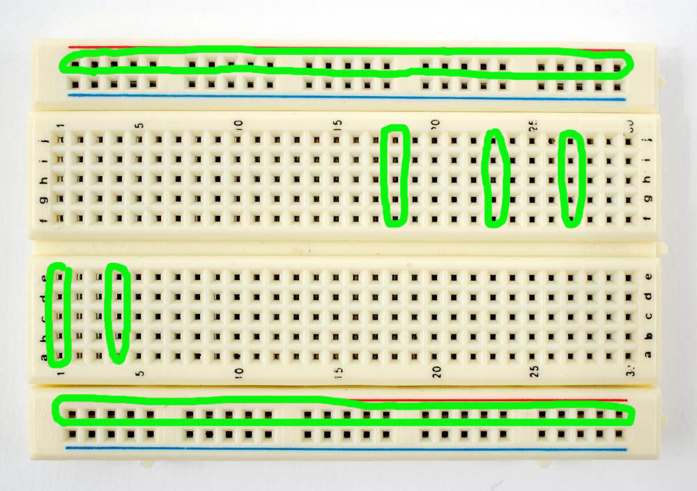

Velkommen!

Plan for dagen:
- Foredrag
- Omvisning
- Workshop
- micro:bit
Tema for foredraget:
Introduksjon:
- Sonen
- IFI
- UiO
Programmering
- micro:bit
- Basic programmering


Programmer på Ifi
Design, bruk og interaksjon
Digital økonomi og ledelse
Programmering og systemarkitektur
Robotikk og intelligente systemer
Språkteknologi
Introduksjon:
SonenIFIUiO
Programmering
- micro:bit
- Basic programmering


Breadboard på 1-2-3

Variabler
- Lagrer data
- Verdier som kan endres
- Flere typer
Heltall
- int (står for integer)
- Tall uten desimaler
- long (større tall enn int)
a = 5;
Flyttall
- float (floating point number)
- Desimaltall
- double (tar 64 bit, mot floats 32 bit)
pi = 3.14;
Sannhetsverdier
- boolean
- En variabel som enten er sann(true) eller usann(false)
awesome = true;
boring = false;
Strenger (tekst)
- String (en streng med tegn)
- En sammensatt datatype
text = "Dette er en String";
Uttrykk
Produserer verdier
Enkle uttrykk
- Direkteverdier (5, 3.14, 'c'. true, etc.)
- Variabelreferanser (a, pi, c, awesome, etc.)
- Funksjonskall (add(5,3): kommer mer senere)
Aritmetiske uttrykk
- Pluss +, minus -, gange *, dele /
- Brukt på heltall får man heltall
- Hvis ett tall er et flyttall får man flyttall
- Når man deler heltall, rundes svaret mot null (ingen desimaler)
5 + 3 // 8
5 - 3 // 2
pi * 2 // 6.28
11 / 5 // 2
11 / 5.0 // 2.2
Sammenlikningsuttrykk
- To verdier kan sammenliknes
- Mer enn >, mer enn eller lik >=, mindre enn <, mindre enn eller lik <=, lik ==, ulik !=
- Produserer boolske verdier (true, false)
3 > 3 // false
3 >= 3 // true
3 < 3 // false
3 <= 3 // true
3 == 3 // true
3 != 3 // false
Logiske uttrykk
- Slår sammen boolske verdier
- Og &&, eller ||, ikke !
true && true // Gir true
true && false // Gir false
true || false // Gir true
false || false // Gir false
!true // Gir false
Setninger
Instruksjoner for hva programmet gjør
Tilordning
- Sette verdien til en variabel
- Variabel til venstre og uttrykk til høyre for likhetstegnet
a = 5 + 3;
a = a + 1;
pi = 3.14159;
awesome = !awesome;
c = 'C';
Flytkontroll
Lar deg bestemme flyten i programmet.
Dvs. du kan gjøre forksjellige ting avhengig av tilstanden
If
if 'her er noe sant':
dersom det over er sant, så gjør vi dette
if 'poeng er lik 1000':
så få vi ekstra liv
if poeng is 1000:
liv+=1
If-else
if awesome:
print("Du er awesome!")
elif awesomelvl >= 1000:
print("Your lvl of awesome is over 9000")
else:
print("Du er ikke awesome")
While-løkker
int tall = 3;
while tall <= 10:
tall+=1
For-løkker
a = ['a', 'b', 'c']
for c in a:
print(c)
Satt sammen:
num = []
count = 0
# while count != 100
while count is not 100:
count+=1
num.append(count)
for i in num:
if i % 5 == 0 and i % 3 == 0:
print("FizzBuzz")
elif i % 3 == 0:
print("Fizz")
elif i % 5 == 0:
print("Buzz")
else:
print(i)
"Hello World" i forskjellige språk
C
#include
int main(void)
{
printf("Hello World!!\n");
}
C++
#include
int main()
{
std::cout << "Hello, World.";
}
Java
class HelloWorld {
public static void main(String[]args) {
System.out.println("Hello World!");
}
}
Actionscript
trace("Hello World!");
Golang
package main
import "fmt"
import "C"
func main() {
fmt.Println("Hello, 世界")
}
Python 2
print "Hello World!"
Python 3
print("Hello World!")
LOLKODE
HAI
CAN HAS STDIO?
VISIBLE "HAI WORLD!"
KTHXBYE
x86 Assembly
section .text
global _start
_start:
mov edx,len
mov ecx,msg
mov ebx,1
mov eax,4
int 0x80
mov eax,1
int 0x80
section .data
msg db 'Hello, world!',0xa
len equ $ - msg
Introduksjon:
SonenIFIUiO
Programmering
micro:bitBasic programmering
Plan for dagen:
Foredrag- Omvisning
- Workshop
- micro:bit
Plan for dagen:
ForedragOmvisning- Workshop
- micro:bit